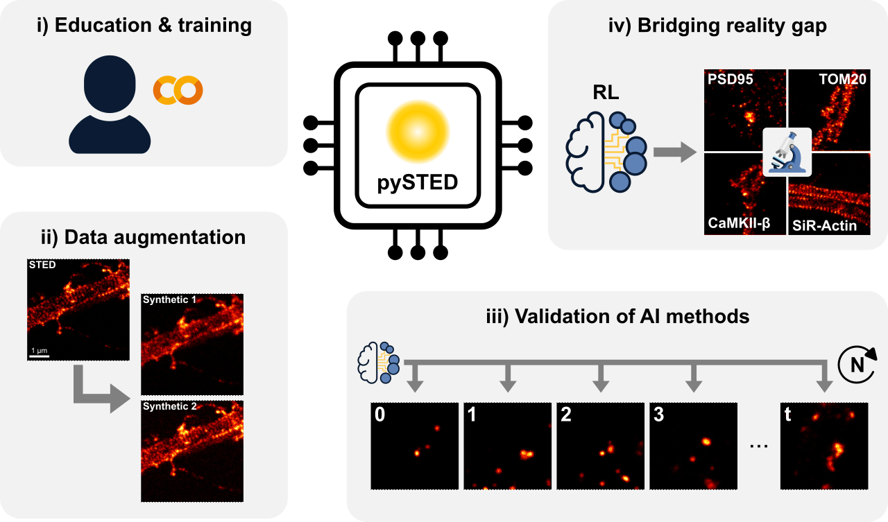

pySTED¶
- :raw-html-m2r:`<a target=”_blank” href=”https://colab.research.google.com/drive/128pOe4KwnZ7MH6HFcd-mG1HjwDWvohnq?usp=sharing”>
<img src=”https://colab.research.google.com/assets/colab-badge.svg” alt=”Open In Colab”/>
{kind=link}
</a>`
We have built a realistic STED simulation platform within the Python environment, namely pysted. pysted breaks down a STED acquisition into its main constituents: wavelength dependent focusing properties of the objective lens, fluorophore excitation and depletion, and fluorescence detection. Each step of the acquisition process corresponds to an independent component of the pipeline and is created with its own parameters that users can modify according to their experimental requirements. Generating a synthetic image with the pysted simulator requires the user to specify the positions of the emitters in the field of view (referred to as datamap) and to provide the characteristics of the fluorophore). The emission and photobleaching properties of the fluorophores that are implemented in pysted and inspired from previous theoretical and experimental models. As in a real experiment, the datamap is continuously being updated during the simulation process to realistically simulate point-scanning acquisition schemes.
Installation¶
We recommend using a virtual environment in which to install pySTED. Anaconda facilitates the creation of a virtual environment on most operating system. For exemple, a virtual environment can be created using
conda create --name pysted python=3.10
conda activate pysted
Using pip¶
We do not provide a pypi installation package (yet). The user can however install pySTED using the url of the current repository
pip install pysted
From source¶
Clone the repository on your computer
git clone https://github.com/FLClab/pySTED.git
To install the necessary public libraries, run
python -m pip install -r pySTED/requirements.txt
python -m pip install -e pySTED
Note. Using the local install will require to compile the cython code that are required in pySTED.
Usage¶
We highly recommend to run the provided notebook to get some insight about how to use pySTED.
Notebook¶
A Google Colab jupyter notebook is provided to learn the basics of pysted.
Local¶
Once pysted is installed, running the example script should be possible.
python pySTED_tutorial.py